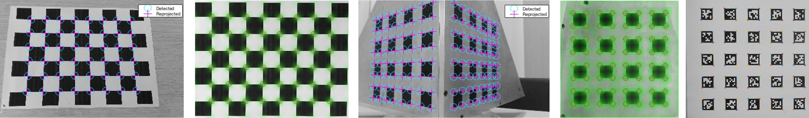

A. Fusiello

Camera calibration determines the external and internal parameters (including radial distortion coefficients) of a camera given a certain number of images of a calibration object, whose dimensions are known. Two techniques are available:
Reference points are detected with template matching on a (perspective) rectified image; four points for each plane must be specified by the user in a predefined order by clicking on the image. Several parameters can be changed by editing the two main scripts: documentation should be clear enough to allow for customization.
The last version includes also an automatic procedure based on AprilTags detection (it requires the apritag Python module).
The MATLAB Calibration Toolkit is based on functions contained in the MATLAB Computer Vision Toolkit by A. Fusiello. The code does not have any other external dependency on toolboxes or packages, and runs indifferently on Octave and Matlab. It has been tested on Octave 4.2.1 and Matlab R2017a. The checkerboard can be downloaded from here